<!DOCTYPE html>
<html>
  <head>
    <title>Removal and Replacement — 2011 BMW 128i Coupe (E82) L6-3.0L (N52K) Service Manual | Operation CHARM</title>
    <meta name='description' content="Detailed repair manual for the 2011 BMW 128i Coupe (E82) L6-3.0L (N52K).">
    <link rel='stylesheet' href="../style.css">
    <meta name='viewport' content='width=device-width, initial-scale=1.0' />
  </head>
  <body>
    <div class='theme-colors header'>
      <div class='branding'><b>Operation CHARM</b>: Car repair manuals for everyone.</div>
<div class=breadcrumbs><a class='breadcrumb-part' href="../">Home</a> <b>&gt;&gt;</b> <a class='breadcrumb-part' href="../BMW/">BMW</a> <b>&gt;&gt;</b> <a class='breadcrumb-part' href="../BMW/2011/">2011</a> <b>&gt;&gt;</b> <a class='breadcrumb-part' href="../index.html">128i Coupe (E82) L6-3.0L (N52K)</a> <b>&gt;&gt;</b> <a class='breadcrumb-part' href="0.html">Repair and Diagnosis</a> <b>&gt;&gt;</b> <a class='breadcrumb-part' href="0.html#Engine%2C%20Cooling%20and%20Exhaust/">Engine, Cooling and Exhaust</a> <b>&gt;&gt;</b> <a class='breadcrumb-part' href="0.html#Engine%2C%20Cooling%20and%20Exhaust/Engine/">Engine</a> <b>&gt;&gt;</b> <a class='breadcrumb-part' href="0.html#Engine%2C%20Cooling%20and%20Exhaust/Engine/Cylinder%20Head%20Assembly/">Cylinder Head Assembly</a> <b>&gt;&gt;</b> <a class='breadcrumb-part' href="0.html#Engine%2C%20Cooling%20and%20Exhaust/Engine/Cylinder%20Head%20Assembly/Service%20and%20Repair/">Service and Repair</a> <b>&gt;&gt;</b> <a class='breadcrumb-part' href="317.html">Removal and Replacement</a></div></div>
<div class="theme-colors floaty-message lemon-message">
  <b style="font-size: 1.5em; color: gold">Manuals through 2025 now available!</b>
  <br><br>
  Our trusted friends have launched a new website named LEMON, which has newer manuals. It also contains all the CHARM manuals.
  <br><br>
  LEMON is the spiritual successor to  CHARM, I recommend you try it!
  <br><br>
  Link: <a style='white-space: nowrap' href="../missing-page">lemon-manuals.la</a> or <a style='white-space: nowrap' href="../missing-page">lemon-manuals.org.ua</a>
  <br><br>
  (Some people have issue connecting. LEMON is investigating. For now, use Firefox or change your DNS server)
  <br><br>
  Or, hide this message: <a href="../missing-page">temporarily</a> or <a href="../missing-page">permanently</a>
</div>
<div class='main'>
<h1>Removal and Replacement</h1><b>11 12 100 Removing and installing cylinder head (N52K)</b><br><br><span class='indent-2'>&#09;</span><b>Special tools required:</b><br><br><div class='oxe-image'></div><br><br><br><br><span class='indent-2'>&#09;</span><b>Important!</b><br><span class='indent-5'>&#09;</span>Aluminum-magnesium materials.<br><span class='indent-5'>&#09;</span>No steel screws/bolts may be used due to the threat of electrochemical corrosion.<br><span class='indent-5'>&#09;</span>A magnesium crankcase requires aluminum screws/bolts exclusively.<br><span class='indent-5'>&#09;</span>Aluminum screws/bolts must be replaced each time they are released.<br><span class='indent-5'>&#09;</span>Aluminum screws/bolts are permitted with and without color coding (blue).<br><span class='indent-5'>&#09;</span>For reliable identification:<br><span class='indent-5'>&#09;</span>Aluminum screws/bolts are not magnetic.<br><span class='indent-5'>&#09;</span>Jointing torque and angle of rotation must be observed without fail (risk of damage).<br><br><div class='oxe-image'></div><br><br><br><br><span class='indent-2'>&#09;</span><b>Necessary preliminary tasks:</b><br><span class='indent-2'>&#09;</span>^<span class='indent-5'>&#09;</span>Remove <a href="0.html#Engine%2C%20Cooling%20and%20Exhaust/Exhaust%20System/">exhaust system</a><br><span class='indent-2'>&#09;</span>^<span class='indent-5'>&#09;</span>Drain coolant<br><span class='indent-2'>&#09;</span>^<span class='indent-5'>&#09;</span>Drain off engine oil<br><span class='indent-2'>&#09;</span>^<span class='indent-5'>&#09;</span>Remove both <a href="558.html">exhaust manifolds</a><br><span class='indent-2'>&#09;</span>^<span class='indent-5'>&#09;</span>Remove intake plenum<br><span class='indent-2'>&#09;</span>^<span class='indent-5'>&#09;</span>Detach coolant hoses from cylinder head<br><span class='indent-2'>&#09;</span>^<span class='indent-5'>&#09;</span>Remove intake and exhaust camshaft adjusters<br><br><div class='oxe-image'></div><br><br><br><br><span class='indent-2'>&#09;</span><b>Important!</b><br><span class='indent-5'>&#09;</span>Fit new cylinder head screws.<br><span class='indent-5'>&#09;</span>Do not wash off bolt coating.<br><span class='indent-5'>&#09;</span>There must be no fluids or contaminants in any of the threaded holes for the cylinder head bolt connections.<br><span class='indent-5'>&#09;</span>Risk of corrosion and cracking!<br><span class='indent-5'>&#09;</span>Apply a light coat of oil to washer contact areas and threads of new <a href="310.html">cylinder head bolts</a>.<br><br><span class='indent-2'>&#09;</span>Release screws (1).<br><br><span class='indent-2'>&#09;</span>Unclip <a href="354.html">timing chain</a> module (2) at junction (3) and remove towards top.<br><br><div class='oxe-image'>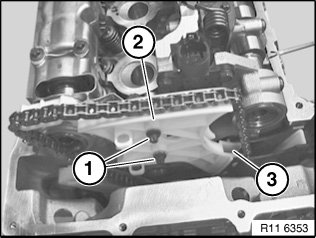</div><br><br><br><br><span class='indent-2'>&#09;</span>Set down <a href="354.html">timing chain</a>.<br><br><span class='indent-2'>&#09;</span><b>Important!</b><br><span class='indent-5'>&#09;</span>If the <a href="354.html">timing chain</a> is stowed in the gearcase, the <a href="296.html">crankshaft</a> must no longer be rotated.<br><span class='indent-5'>&#09;</span>This would cause the <a href="354.html">timing chain</a> on the crankshaft sprocket wheel to jam or jump.<br><br><span class='indent-2'>&#09;</span><b>Installation:</b><br><span class='indent-2'>&#09;</span>The <a href="354.html">timing chain</a> is lifted out with a hook only during assembly.<br><br><div class='oxe-image'>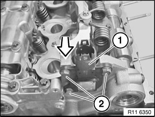</div><br><br><br><br><span class='indent-2'>&#09;</span>Release bolts (2) for eccentric shaft sensor (1).<br><br><span class='indent-2'>&#09;</span>Remove eccentric shaft sensor (1) towards front.<br><br><div class='oxe-image'>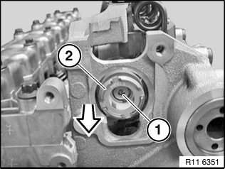</div><br><br><br><br><span class='indent-2'>&#09;</span><b>Important!</b><br><span class='indent-5'>&#09;</span>Screw (1) is not magnetic and must be secured against falling down.<br><br><span class='indent-2'>&#09;</span>Release screw (1).<br><br><span class='indent-2'>&#09;</span>Remove magnet wheel (2) towards front.<br><br><div class='oxe-image'></div><br><br><br><br><span class='indent-2'>&#09;</span><b>Important!</b><br><span class='indent-5'>&#09;</span>Magnet wheel (1) is highly magnetic and must be protected against metal filings/borings.<br><br><span class='indent-2'>&#09;</span>After removing, place magnet wheel (1) in a plastic bag (2) with a seal.<br><br><div class='oxe-image'></div><br><br><br><br><span class='indent-2'>&#09;</span>Pre-tension eccentric shaft (1) upwards in direction of arrow.<br><br><span class='indent-2'>&#09;</span>Remove stop screw between 1st and 2nd cylinders.<br><br><span class='indent-2'>&#09;</span>Tightening torque 11 37 5AZ.<br><br><div class='oxe-image'>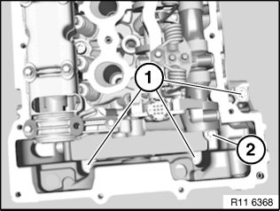</div><br><br><br><br><span class='indent-2'>&#09;</span><b>Note:</b><br><span class='indent-2'>&#09;</span>Bolt (2) can only be released when the <a href="354.html">timing chain</a> module is pressed forward slightly.<br><br><span class='indent-2'>&#09;</span><b>Important!</b><br><span class='indent-5'>&#09;</span>Secure bolt (2) with a gripper against falling down.<br><br><span class='indent-2'>&#09;</span>Release screw (2).<br><br><span class='indent-2'>&#09;</span>Tightening torque 11 12 3AZ.<br><br><span class='indent-2'>&#09;</span>Release screws (1).<br><br><span class='indent-2'>&#09;</span>Tightening torque 11 12 4AZ.<br><br><span class='indent-2'>&#09;</span><b>Installation:</b><br><span class='indent-2'>&#09;</span>Replace aluminum screws.<br><br><div class='oxe-image'>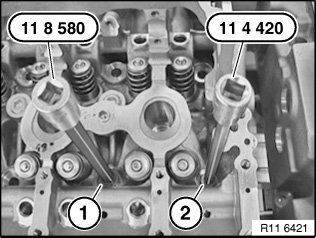</div><br><br><br><br><span class='indent-2'>&#09;</span><b>Important!</b><br><span class='indent-5'>&#09;</span>Observe different bolt heads.<br><br><span class='indent-2'>&#09;</span>Release <a href="310.html">cylinder head bolts</a> (1) M10 with special tool 11 8 580.<br><br><span class='indent-2'>&#09;</span>Release <a href="310.html">cylinder head bolts</a> (2) M9 with special tool 11 4 420.<br><br><span class='indent-2'>&#09;</span><b>Note:</b><br><span class='indent-2'>&#09;</span>Picture shows intake and exhaust camshafts removed.<br><br><div class='oxe-image'>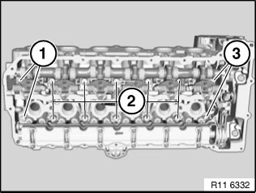</div><br><br><br><br><span class='indent-2'>&#09;</span><b>Important!</b><br><span class='indent-5'>&#09;</span>Observe different M9 bolt lengths (1 and 3).<br><br><span class='indent-2'>&#09;</span>Undo <a href="310.html">cylinder head bolts</a> (1 and 3) M9 using special tool 11 4 420.<br><br><span class='indent-2'>&#09;</span>Tightening torque 11 12 2AZ.<br><br><span class='indent-2'>&#09;</span>Release <a href="310.html">cylinder head bolts</a> (2) M10 with special tool 11 8 580 from outside inwards.<br><br><span class='indent-2'>&#09;</span>Tightening torque 11 12 1AZ.<br><br><span class='indent-2'>&#09;</span><b>Important!</b><br><span class='indent-5'>&#09;</span>All <a href="310.html">cylinder head bolts</a> (1, 2 and 3) must be replaced.<br><span class='indent-5'>&#09;</span>Joining torque and angle of rotation must be observed without fail.<br><span class='indent-5'>&#09;</span>Risk of damage!<br><br><span class='indent-2'>&#09;</span>Secure special tool 11 0 320 with existing cylinder head cover bolts (1).<br><br><div class='oxe-image'>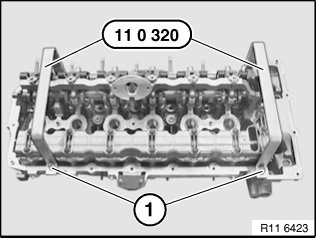</div><br><br><br><br><span class='indent-2'>&#09;</span>Tightening torque 11 12 5AZ.<br><br><span class='indent-2'>&#09;</span><b>Important!</b><br><span class='indent-5'>&#09;</span>Removing and install cylinder head with a second person helping.<br><span class='indent-5'>&#09;</span>Weight of cylinder head with add-on parts is approx. 40 kg.<br><span class='indent-5'>&#09;</span>Do not rest cylinder head on sealing surface. Risk of damage to valves!<br><br><div class='oxe-image'></div><br><br><br><br><span class='indent-2'>&#09;</span>Insert 11 4 430 special tool into bores.<br><br><div class='oxe-image'>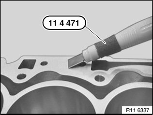</div><br><br><br><br><span class='indent-2'>&#09;</span>Remove coarse residues on sealing surfaces with special tool 11 4 471 from cylinder head and crankcase.<br><br><span class='indent-2'>&#09;</span><b>Important!</b><br><span class='indent-5'>&#09;</span>Do not use any metal-cutting tools.<br><br><span class='indent-2'>&#09;</span>Remove fine residues on sealing surfaces with special tool 11 4 472 from cylinder head and crankcase.<br><br><div class='oxe-image'>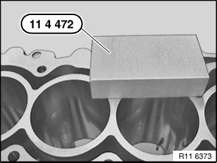</div><br><br><br><br><span class='indent-2'>&#09;</span><b>Important!</b><br><span class='indent-5'>&#09;</span>Do not use any metal-cutting tools.<br><br><div class='oxe-image'>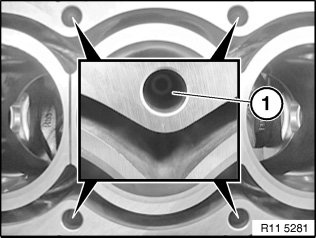</div><br><br><br><br><span class='indent-2'>&#09;</span>There must be no fluids or contaminants in any of the threaded holes (1) for the cylinder head bolt connections.<br><br><span class='indent-2'>&#09;</span>Risk of corrosion and cracking!<br><br><span class='indent-2'>&#09;</span>Clean all threaded holes.<br><br><span class='indent-2'>&#09;</span>Replace <a href="346.html">cylinder head gasket</a>.<br><br><div class='oxe-image'>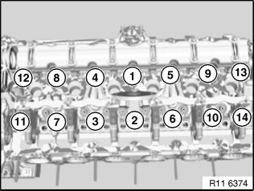</div><br><br><br><br><span class='indent-2'>&#09;</span><b>Important!</b><br><span class='indent-5'>&#09;</span>Observe sequence for tightening <a href="310.html">cylinder head bolts</a> without fail.<br><br><span class='indent-2'>&#09;</span>Fit new cylinder head screws.<br><br><span class='indent-2'>&#09;</span>Insert <a href="310.html">cylinder head bolts</a> (1 to 10) with special tool 11 8 580.<br><br><span class='indent-2'>&#09;</span>Tightening torque 11 12 1AZ.<br><br><span class='indent-2'>&#09;</span>Insert <a href="310.html">cylinder head bolts</a> (11 to 14) with special tool 11 4 420.<br><br><span class='indent-2'>&#09;</span>Tightening torque 11 12 2AZ.<br><br><span class='indent-2'>&#09;</span><b>Note:</b><br><span class='indent-2'>&#09;</span>Picture shows intake and exhaust camshafts removed.<br><br><div class='oxe-image'></div><br><br><br><br><span class='indent-2'>&#09;</span>Observe sequence for tightening <a href="310.html">cylinder head bolts</a> without fail.<br><br><span class='indent-2'>&#09;</span><b>Important!</b><br><span class='indent-5'>&#09;</span>The 2nd torsion angle relates only to <a href="310.html">cylinder head bolts</a> 1 to 10.<br><br><span class='indent-2'>&#09;</span><b>Installation:</b><br><span class='indent-2'>&#09;</span>^<span class='indent-5'>&#09;</span>Jointing torque:<br><span class='indent-5'>&#09;</span>All <a href="310.html">cylinder head bolts</a> 1 to 14 to 30 Nm<br><span class='indent-2'>&#09;</span>^<span class='indent-5'>&#09;</span>1st angle of rotation:<br><span class='indent-5'>&#09;</span>All <a href="310.html">cylinder head bolts</a> 1 to 14 to 90&deg;<br><span class='indent-2'>&#09;</span>^<span class='indent-5'>&#09;</span>2nd angle of rotation:<br><span class='indent-5'>&#09;</span>Only <a href="310.html">cylinder head bolts</a> 1 to 10 to 90&deg;<br><span class='indent-2'>&#09;</span>^<span class='indent-5'>&#09;</span>3rd angle of rotation:<br><span class='indent-5'>&#09;</span>All <a href="310.html">cylinder head bolts</a> 1 to 14 to 45&deg;<br><br><div class='oxe-image'></div><br><br><br><br><span class='indent-2'>&#09;</span>Insert bolts (1).<br><br><span class='indent-2'>&#09;</span>Tightening torque 11 12 4AZ.<br><br><span class='indent-2'>&#09;</span><b>Important!</b><br><span class='indent-5'>&#09;</span>Secure bolt (2) with a gripper against falling down.<br><br><span class='indent-2'>&#09;</span>Insert bolt (2).<br><br><span class='indent-2'>&#09;</span>Tightening torque 11 12 3AZ.<br><br><span class='indent-2'>&#09;</span><b>Installation:</b><br><span class='indent-2'>&#09;</span>Replace aluminum screws.<br><br><div class='oxe-image'></div><br><br><br><br><span class='indent-2'>&#09;</span>Assemble engine.<br><br><h3>�
u:</h3><div class='oxe-image'></div><br><br><br><div class='oxe-image'>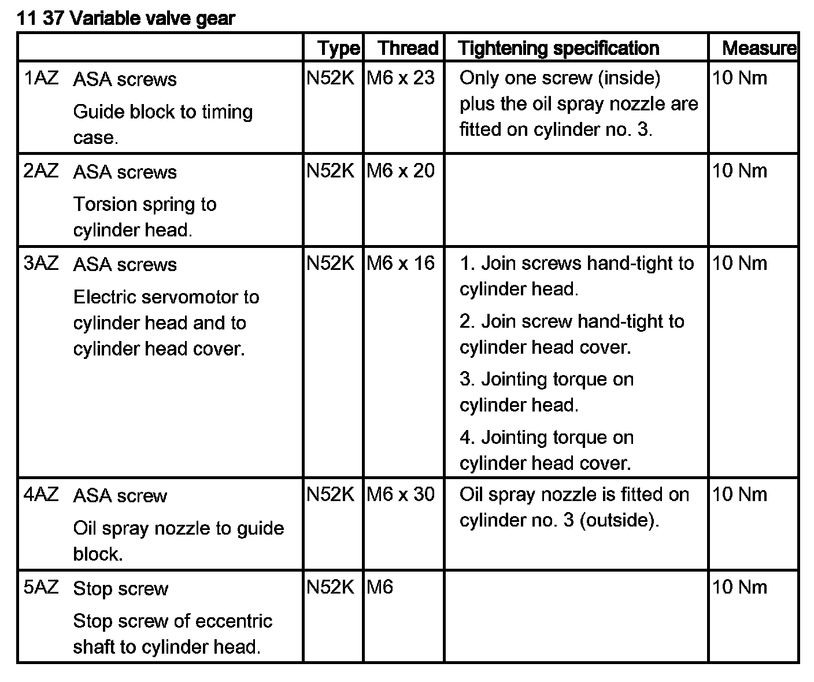</div><br><br><br></div>
<div class="theme-colors footer">
  <i>pro multis</i> · <a href="../about.html">About Operation CHARM</a>
</div>
<script src="../script.js"></script>
</body>
</html>
